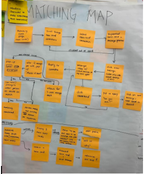
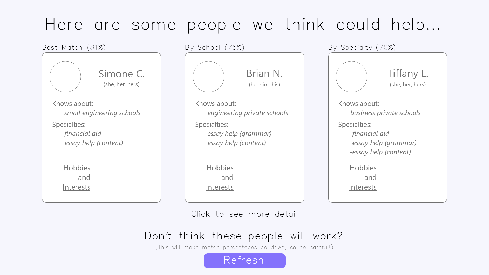
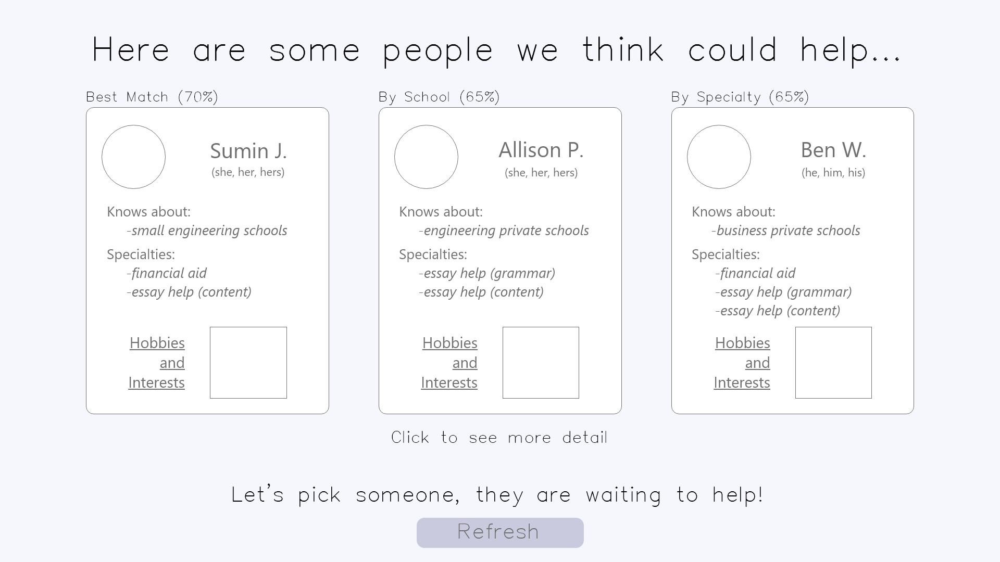
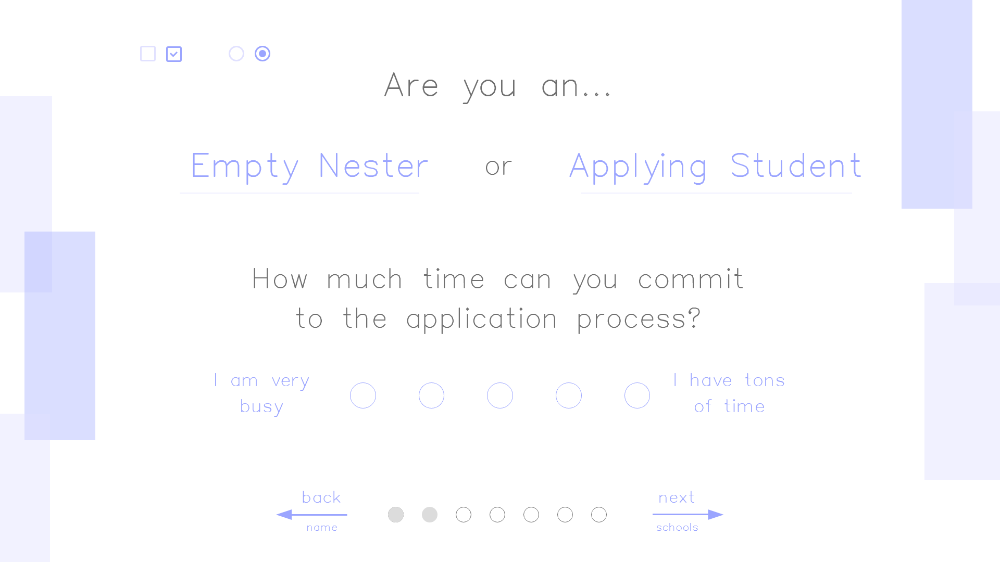
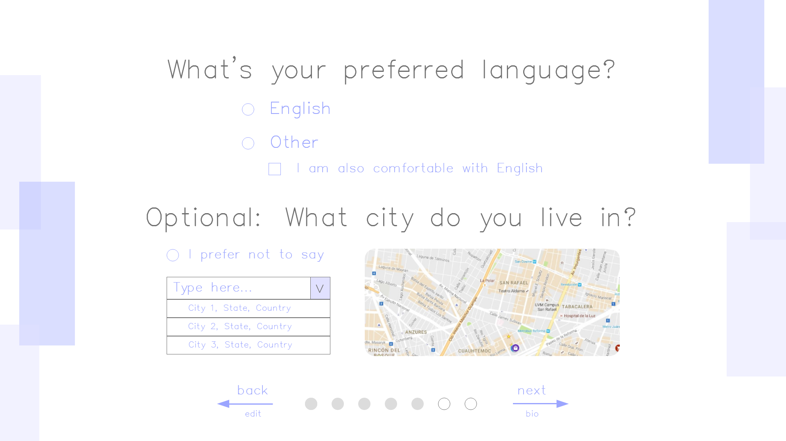
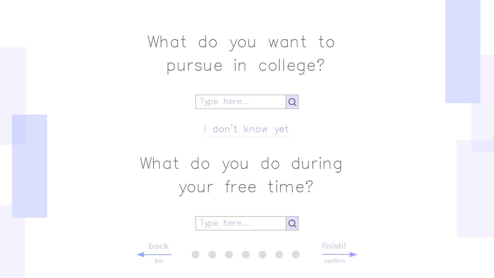

Design Refinement
Compared to the Design Development, a deeper dive into our design.
Our Concept
Our current design is focused on connecting empty-nester parents to families applying to colleges for the first time. Our users can create profiles and be connected with empty nesters or applicants. From there, empty-nester parents can give college application advice through forums, blog posts, notifications, and essay editing platforms. We want to create a friendly environment where our users can establish new connections centered around the college application process. Even after the application is completed, connected users are encouraged to keep each other updated on college admission results. In this phase, we focused on the process of connecting applicants to empty-nester parents.
Description
Our goal is to investigate the way families tackle the college application process. We would like to observe how you use current college application resources and ask questions to pinpoint ways to improve the experience. We are also interested to know what sort of features you would like to see in college preparation applications. Everything during the course of the interview is optional, and you can end it at any time.
Paper Prototype to Wireframe Changes
Our current design is focused on connecting empty-nesters with college applicants. Our design was made to depict the connecting process after an empty-nester has already developed their profile and desire and are now looking for college applicants to help and build a connection with. From our paper prototype, we focused on developing the profile creation and connecting aspects of our site. From here, we directed our focus from the profile creation process, this was because the process to develop a profile is a bit more straightforward, and we focused more on the connection process as that process was less developed.
From our paper prototype of our connection process, we decided to not use one’s Hero Card to compare to their potential matches because of the overwhelming amount of information and also unnecessary additions since people already know enough about themselves naturally. Additionally, we decided to compact Hero Cards a bit more to include only the information needed and then added interest/hobbies as a small part of the Hero Cards instead of a large focus. Aside from those slight changes, we decided to dive deeper into the actual connection process and depict the next steps after you accepted or denied helping someone such as the messaging and testing the mechanism for gauging someone’s compatibility.
A link to the prototype of the connecting process can be found here: https://xd.adobe.com/view/07f8d389-ff87-42a5-6ab6-22529a902cdf-71c9/
The design scenario associated with this prototype was the following:
You are Simone, an Empty Nester parent with a child at Olin College of Engineering. You are feeling a little lonely now that your son is in college, especially during the weekends. One of your friends introduced you to Apptitude, and you decide to join as a mentor for college applicants. You go through the onboarding process and create an account. When you created your profile you emphasized how you can give information about small engineering schools and help with financial aid and college essays. The next step is for you to find applicants that you think you would work well with. A few students have already reached out to you, and you started some conversations with PuBing and Felix. You look through some other students that reached out, and Sofia M. sounds like a good match. Accept Sofia M.’s request for you to be her mentor after getting to know her better through a conversation.
We also created the following prototypes of how the connecting process looks for college applicants.
Applicants see three empty-nester parents that our matching algorithm suggests. They can click on a hero card to get more information about an empty nester and send them a message if they would like to reach out and potentially establish a connection. If none of the suggestions seem like a good fit, then they can click the “Refresh” button which could generate three new suggestions.
Once they clicked the "Refresh" button once, the button becomes gray to encourage applicants to choose an empty-nester parent to reach out to.
Besides creating prototypes for the connecting process, we also implemented parts of the onboarding process in Adobe XD.
Page 2 of the onboarding process where we ask whether an user is an empty nester or applying student with the additional question on how much time they can commit to the application process.
Page 5 of the onboarding process where language and approximate geographical location is given as an optional choice.
Last page of the onboarding process where users can put (1) what they want to or already pursued in college and (2) their hobbies.
Heuristic Evalutation
We performed a heuristic evaluation on Oof-Whites, another team’s project, and received an evaluation on our project in return.
While examining another team’s prototype, we realized the importance of maintaining a consistent interface and having clear affordances, especially for users who are going through the interface for the first time. Their design clearly showed the user how to navigate through the application and clear communication about the system status. However, their design did not make the affordances clear. One example was their use of color in indicating interaction or highlighting to give the user an indication that something is interactive, but from page to page this color pattern differed which lead to more confusion for the user. Another takeaway was that the heavy reliance on familiar icons sometimes had a different impact than intended as the affordances were often unclear without any instruction.
On the other end, our evaluation feedback most concerned clear system status communication and better navigation. A large part of our interface needed to incorporate means of correction or going back in the process with the help of back buttons and the ability to edit different things while also having the ability to get notifications on anything new that one received. To go along with the back button, we need to provide users with an indication of where in the process they are with their profile and connections while providing a way to go back or edit through everything. Along with this, from the perspective of an Empty-nester, one part of our feedback was that people wanted to clearly see the reasons behind a connection suggestion through highlighting or another clear manner while also clearly indicating to a person through some method that they have limited ability to connect with others in order to brew more serious messaging and connection to people.
Another aspect of our feedback received was that we need to maintain consistency between keeping the casual tone of our site while maintaining clear affordances through means such as: Eliminating percentages for matches and replace them with highlighting for students and parents, looking into more established formats and getting a better grasp of the flow of our website as a whole.
Changes Based on Feedback
Based on the feedback we received, we plan to make the following changes to our interface:
- Create a back button and navigation bar that would enable users to more easily transition among menus, screens, and flows in the app
- Implement notification icons that would appear whenever someone wants to connect with the user, which would improve the “visibility of the system status”
- Emphasize the fact that each user has a limited number of connections, which encourages users to take the messaging aspect of the connecting process more seriously.
- Eliminate percentages for matches to make the connecting process appear more personal and less objective.
- Highlight similarities between students and parents, so users know the reasoning behind each connection suggestion. We pitched this idea to our evaluators, and they thought it would be more effective than displaying a match percentage.
- Draw inspiration from established web page formats to make our interface more familiar to new users.
- Integrate our onboarding prototype with the connecting process prototype to help users gain a better understanding of the flow of the website.
Key Insights from this Phase
Our key insights include:
- Make sure users always know where they are while navigating through the interface.
- Create clear affordances so users know how and why they should complete particular tasks.
- Users like interfaces that seem familiar, so ground certain aspects of a design (e.g. messaging) with more traditional features (e.g. notification icons).
Next Steps
For the next phase, we plan to improve on our wireframes and prototypes based on the cognitive walkthroughs and heuristic evaluation feedback we received. Our main goal is to make the overall prototype more realistic and fully flushed out. This will be done by addressing the feedback we received to improve: match between system and the real world, and user control and freedom. More specifically, we want to spend some time improving the overall navigation of the website. We will continue to focus our efforts on the matching and connection section of the app but will explore the onboarding and profile building once we feel the other parts have been fully flushed out.
∑ Individual Efforts < Team Results
Shy
In this phase, I focused on developing the connection between the different windows of our wireframe while working on updating the team website.
Siena
During this phase, I focused on the creation of the student-view, specifically the empty-nester’s hero cards in the matching section. I also did some of the onboarding process.
Cassandra
In this phase, I worked on creating the hobbies and interests aspect of the onboarding process. I also did the messaging pages, which are part of the connecting process.
Sabrina
In this phase, I contributed to the team’s goals by creating the wireframes and prototypes of the “hero cards” for the matching section. In the matching section, I also helped create the mapping for the wireframes. Lastly, I also conducted a cognitive walkthrough with a user.